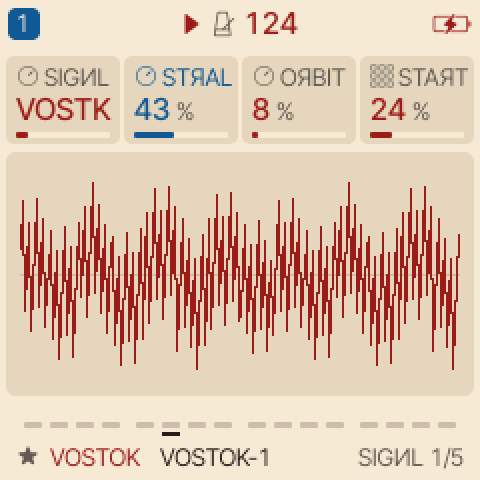

Предисловие директора института
Дорогая пионерка, дорогой пионер!
В твоих руках последний крик моды от ВЭБ «Карл-Маркс-Штадт Гармоникаверке» (народного предприятия гармонных фабрик Карл-Маркс-Штадта). Это не электроорган и не электропианино. Это синтезатор – инструмент, которого ещё несколько лет назад не могло быть.
Наша наука отправила человека в космос. Теперь она отправляет вслед за ним музыку. Синтезатор «Восток» рождает звук не струнами и не трубами, а математикой и электротехникой: колеблется ток, одно колебание изгибает другое, и так возникают звуки небывалой чистоты. Это заслуга нового формульного кода Z37. Конрад Цузе гордился бы.
Внимательно прочти это руководство, прилежно занимайся и делись своими песнями с товарищами. Будущее звучит так, как ты его сыграешь.
Запомни, пионер: синтезатор вознаграждает любопытство. Покрути каждую ручку, прежде чем спрашивать, что она делает.
Что такое «Восток»?
«Восток» – это операционная система для двух приборов фирмы M-VAVE:
| Прибор | Модель | Для кого |
|---|---|---|
| «Восток FM-1» | M-VAVE FM-1 | пионерская модель для кармана куртки |
| «Восток SMK-37» | M-VAVE SMK-37 Pro, SMK-37 Elite, MKE-P37 | модель для Дома культуры: 37 клавиш, пэды и фейдеры |
Оба прибора звучат одинаково. «Восток» построен на Felucca, свободной операционной системе Hügelton Instruments, и добавляет собственный звуковой движок на формульном коде Z37 – VOSTOK – для минимал-вейва, колдвейва, пост-панка, дарквейва, советвейва и думервейва.
Состояние этого издания
| Часть | Состояние |
|---|---|
| Движок VOSTOK: 8 сигналов, 6 макросов, SUB, LEIER | готово |
| 68 заводских звуков: шесть стилей и четыре ударных набора | готово |
| Экипаж при включении, набор «Машинный зал», выполнение плана, кнопки SMK-37 SPUR и CHORD | готово |
| Псевдокириллица, палитра VOSTOK, заставка | готово |
| Миссии, радиостудия, режим учёбы | в подготовке |
| Английские надписи на экране (настройка SPRACHE) | в подготовке |
То, что «в подготовке», здесь пока не описано. До тех пор остальные функции работают как в Felucca.
Ввод в эксплуатацию
Попробовать без прибора
Эмулятор работает в браузере (Chrome или Edge): https://g0rst.github.io/VostockFM-1/emu/. В нём тот же программный код, что и в приборе.
Инструкция по программированию
- Резервная копия. Перед первым программированием SMK-37 сохрани всю память прибора. Как это сделать, написано в
комплекте для переноса (
docs/02-update-and-recovery.md). Без копии безопасного пути назад нет. - Трансляция. Операционная система собирается командой
./build.sh(см.BUILDING.mdв репозитории). Для каждой модели – свой пакет. - Программирование. Переведи прибор в режим обновления и загрузи пакет программатором.
- Запуск. После включения прибор показывает заставку «SYNTHESIZER DER ZUKUNFT» (синтезатор будущего), а затем «AUF GEHT'S!» – «Поехали!».
Запомни, пионер: сначала копия, потом программирование. Космонавт не стартует без обратного билета.
Шрифт института
Надписи на экране сделаны на немецком языке, но набраны «псевдокириллицей»: пять латинских заглавных букв заменены похожими русскими. Остальные остаются как есть, чтобы всё легко читалось.
| Латиница | N | R | W | X | Y |
|---|---|---|---|---|---|
| на экране | И | Я | Ш | Ж | Ч |
Так «ARCHIV» (архив) превращается в AЯCHIV, а «FUNKSTILLE» (радиомолчание) – в FUИKSTILLE. Имена и лицензии в титрах, а также подсказки остаются латиницей.
Звуковой движок VOSTOK
Где его найти
- PRESETS: VOSTOK стоит в самом начале списка. Ручка KNOB 2 переключает движки.
- Удерживая EDIT: первая белая клавиша выбирает VOSTOK.
На экране он называется VSTK и отмечен звездой.
Как он звучит
VOSTOK считает формульным кодом Z37: это частотная модуляция двумя операторами. Модулятор изгибает колебание несущей. Чем сильнее, тем больше обертонов и тем ярче звук. Вместо сотен настроек есть восемь готовых рецептов – сигналов – и шесть макросов, каждый из которых меняет сразу несколько параметров.
Сигналы (ручка SIGNL)
| № | Сигнал | На экране | Звук | Для чего |
|---|---|---|---|---|
| 1 | Спутник | SPUTN | чистый писк | ведущие партии, арпеджио |
| 2 | Восток | VOSTK | импульсная волна | бас минимал-вейва |
| 3 | Молния | MOLNJ | почти пила | мелодии колдвейва |
| 4 | Космодром | KOSMO | полый меандр | бас пост-панка |
| 5 | Тундра | TUNDR | дышащий пэд | пэды дарквейва |
| 6 | Полярное сияние | POLAR | FM-колокол | мелодии советвейва |
| 7 | Радиограмма | FUNK | шум, металл | хай-хэты, малые барабаны, шумы |
| 8 | Машинный зал | HALLE | падающий тон | бочка, том, щелчок |
| 9 | Набор | KIT | вся ударная установка | одна дорожка для всех барабанов (см. «Экипаж») |
Макросы
| Ручка | Название | Что делает |
|---|---|---|
| STRAL | Излучение | глубина модуляции: от тёмного до ослепительного. Огибающая и LFO, направленные на FLT, тоже двигают её. |
| ORBIT | Орбита | обратная связь модулятора: от гладкого до шершавого и гудящего. Огибающая и LFO на SHP тоже двигают её. |
| START | Старт | 0–63 «звонко»: после удара звук темнеет (чем выше, тем медленнее). 64–127 «плавно»: звук нарастает до 1,5 секунды. |
| SCHWB | Невесомость | вторая, чуть расстроенная несущая: широкие биения советвейва |
| STILL | Радиомолчание | меньше битов, ниже частота дискретизации, темнее фильтр: кассета и короткие волны |
| SUB | Саб | синус октавой ниже, для основы |
| LEIER | Детонация | медленное плавание высоты, как у старого магнитофона |
На первой странице EDIT четыре ручки – это SIGNL, STRAL, ORBIT и START. На второй – SCHWB, STILL, SUB и LEIER.
Запомни, пионер: больше излучения – больше обертонов!
Экипаж и пятилетка
Экипаж
При включении все четыре дорожки уже заняты, и у каждой в секвенсоре есть рисунок. Нажми PLAY – и экипаж заиграет.
| Дорожка | Роль | Звук | Рисунок |
|---|---|---|---|
| 1 | Бас | VOSTOK-1 | OFFBEAT |
| 2 | Пэд | TUNDRA | PAD |
| 3 | Ведущий | MOLNIJA | LEAD |
| 4 | Ритм | MASCHINENHALLE | MOTORIK |
Машинный зал
Девятый сигнал называется KIT. С ним одна дорожка играет всю ударную установку: какой барабан прозвучит, решает клавиша.
| Нота | Барабан |
|---|---|
| 36 (C2) | Топотун (большой барабан) |
| 37 | Удар по ободу |
| 38, 40 | Кузница (малый барабан) |
| 39 | Аплодисменты (хлопок) |
| 42, 44 | Искра (закрытый хай-хэт) |
| 46 | Пар (открытый хай-хэт) |
| 41, 43, 45, 47, 48, 50 | Литавры (томы, в своей высоте) |
| 56 | Писк телеметрии |
На клавишах эти ноты на две октавы ниже: нажми OCT- дважды. В секвенсоре это просто ноты.
В наборе макросы работают иначе: STRAL делает все барабаны ярче или темнее (середина – как задумано), START – длина ударов (32 – как задумано), STILL делает их шершавыми, как старая кассета.
В комплекте четыре звука-набора: MASCHINENHALLE, MARSCHKAPELLE, SCHLURFKIT и RUNDFUNKKIT. И три новых рисунка в SAVE > PHRASES: MARSCH (марш), MOTORIK (моторик) и SCHLURF (медленный шаг думервейва).
Выполнение плана
Пока играет музыка, прибор считает, сколько раз прошёл рисунок выбранной дорожки. Каждые четыре круга он сообщает: PLAN 25 %, PLAN 50 %, PLAN 75 %. После шестнадцати кругов появляется PLAN ERFÜLLT! (план выполнен!) – и начинается следующий план.
Кнопки SMK-37
| Кнопка | Что делает |
|---|---|
| NOTE REPEAT коротко | SPUR (дорожка): выбрать следующую дорожку (1: BASS, 2: FLÄCHE, 3: LEAD, 4: RHYTHMUS) |
| NOTE REPEAT удерживать | как раньше: ручки, повёрнутые при удержании, после отпускания возвращаются |
| CHORD | страницы огибающей, при повторном нажатии – страницы LFO |
Остальные кнопки остаются как были.
Запомни, пионер: кто перевыполнил план, просто играет дальше.
68 заводских звуков
Первые шестнадцать звуков – это первый экипаж. Затем по восемь звуков на каждый стиль и четыре ударных набора машинного зала.
| № | Группа | Звуки |
|---|---|---|
| 1–16 | Первый экипаж | SPUTNIK, VOSTOK-1, LAIKA, TELEMETRIE, BAIKONUR, MOLNIJA, STAHLMARSCH, TUNDRA, WEISSE NACHT, POLARSTATION, POLARLICHT, FRIEDEN, SONNENWIND, PLATTENBAU, RADIOLA, LETZTER BUS |
| 17–24 | Минимал-вейв | KASSETTE, BETONBASS, PIONIERLIED, SIGNALTON, MORSE, FUNKTURM, KLICKTAKT, RECHENWERK |
| 25–32 | Колдвейв | EISKRISTALL, NORDLICHT, KALTFRONT, PERMAFROST, STAHLWERK, GLASHAUS, SCHNEESTURM, FROSTBASS |
| 33–40 | Пост-панк | FABRIKHALLE, SAITENERSATZ, STRASSENBAHN, UNTERGRUND, TROMMLER, BETONBLOCK, NACHTSCHICHT, WALZWERK |
| 41–48 | Дарквейв | KATHEDRALE, NEBELBANK, SCHATTENCHOR, TIEFSEE, NACHTWACHE, SCHWARZMEER, ORGELHALLE, MITTERNACHT |
| 49–56 | Советвейв | SALJUT, MIR, SOJUS, KOSMONAUT, STERNENKARTE, TAIGAWALD, SCHWERELOS, WOSTOK-6 |
| 57–64 | Думервейв | HINTERHOF, NIESELREGEN, TRAMHALTE, KUECHENRADIO, SPAETSCHICHT, TREPPENHAUS, TONBAND, LETZTE TRAM |
| 65–68 | Машинный зал | MASCHINENHALLE, MARSCHKAPELLE, SCHLURFKIT, RUNDFUNKKIT |
Ручка KNOB 4 (LIST) фильтрует список: бас, ведущий, пэд, щипок, клавишные, ударные и эффекты.
Звуковые примеры
Восемь маленьких пьес, сыгранных настоящим звуковым кодом прибора: только движок VOSTOK и его заводские звуки, изменена лишь громкость. Послушай внимательно, а потом сыграй сам!
| Стиль | Слушать | Звуки |
|---|---|---|
| Экипаж | VOSTOK-1, TUNDRA, MOLNIJA, MASCHINENHALLE | |
| Машинный зал | MARSCHKAPELLE, SCHLURFKIT | |
| Минимал-вейв | VOSTOK-1, SIGNALTON, KLICKTAKT, FUNKTURM | |
| Колдвейв | FROSTBASS, KALTFRONT, NORDLICHT, STAHLMARSCH | |
| Пост-панк | FABRIKHALLE, SAITENERSATZ, TROMMLER, FUNKTURM | |
| Дарквейв | KATHEDRALE, TIEFSEE, NACHTWACHE, STAHLMARSCH | |
| Советвейв | MIR, SALJUT, SOJUS, KLICKTAKT | |
| Думервейв | PLATTENBAU, SPAETSCHICHT, KUECHENRADIO, STAHLMARSCH |
Запомни, пионер: Подбирать на слух можно. Списывать тоже. Так учатся музыканты.
Как это выглядит



Упражнения
Упражнение 1. Бас минимал-вейва
- Выбери звук VOSTOK-1.
- Поставь STRAL примерно на 40 %, а START на 20 %: нота станет короткой и сухой.
- Прибавь SUB: у баса появится основа.
- Сыграй фигуру восьмыми на двух нотах. Песне в стиле минимал-вейв больше не нужно.
Упражнение 2. Мелодия колдвейва
- Выбери MOLNIJA.
- Поднимай ORBIT, пока звук не станет чуть шершавым.
- Добавь немного SCHWB и сыграй медленную мелодию в миноре.
Упражнение 3. Колокол советвейва
- Выбери POLARLICHT.
- Поставь LEIER на 30 %, а SCHWB на 40 %.
- Сыграй несколько долгих нот и дай реверберации прозвучать.
Запомни, пионер: меньше нот – больше простора. Тишина между нотами – тоже музыка.
Уход за прибором
- Путь назад: с резервной копией памяти ты в любой момент вернёшься к заводской операционной системе.
- Данные: «Восток» хранит свои данные отдельно. При переходе с другой операционной системы её данные стираются.
- Сообщить об ошибке: https://github.com/g0rst/VostockFM-1
«Восток» – любительский проект на основе операционной системы Felucca (GPL-3.0). ВЭБ «Карл-Маркс-Штадт Гармоникаверке» – выдумка, и «Восток» не связан с M-VAVE. Программирование – на свой страх и риск.